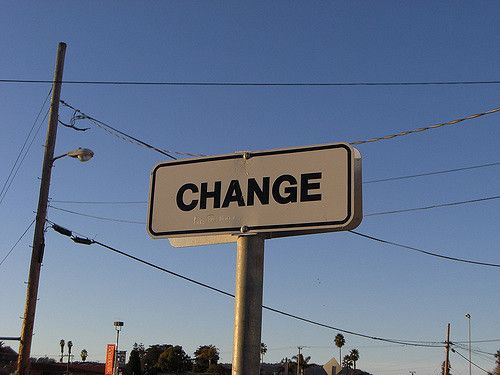

前言
最近在开发一个移动端项目，对于视口的概念任然比较模糊，在网上看了很多篇博客，在此把自己所领悟到的一些内容记录一下。
1.什么是visual viewport 和layout viewport？
首先，通过两张图来理解一下！


打个比方，比如我们通过一个圆筒看一张画，画不动，圆筒离得越近，画就越大，圆筒离得越远，画就越小。并且当你移动圆筒的方向时，呈现的画的部分也不同。同时也可以缩放和放大圆筒的大小，呈现的画也会随之放大和缩小。
这是一种常见的现象，visual viewport和layout viewport之间也是这样的关系。visual viewport就相当于那个圆筒所呈现出的画面，layout viewport 就相当于画。但我们要明白，layout viewport的宽高没发生任何的变化,变化的仅仅是visual viewport去远离或者靠近layout viewport，比如用户通过滚动来改变他所看到的页面的部分，或者通过缩放来改变visual viewport的大小。
以上就是我个人的理解!
2.viewport的属性
| 属性名 | 取值 | 描述 |
|---|---|---|
| width | 正整数 或 device-width | 定义视口的宽度，单位为像素 |
| height | 正整数 或 device-height | 定义视口的高度，单位为像素，一般不用 |
| initial-scale | [0.0-10.0] | 定义初始缩放值 |
| minimum-scale | [0.0-10.0] | 定义缩小最小比例，它必须小于或等于maximum-scale设置 |
| maximum-scale | [0.0-10.0] | 定义放大最大比例，它必须大于或等于minimum-scale设置 |
| user-scalable | yes/no | 定义是否允许用户手动缩放页面，默认值yes |
一般在项目中，我们这样设置viewport。
1 | <meta name="viewport" id="viewport" content="width=device-width,initial-scale=1,maximum-scale=1,user-scalable=no"> |
部分机型默认viewport大小：

关于缩放以及initial-scale的默认值问题
1 | visual viewport宽度 = ideal viewport宽度 / 当前缩放值 |
安卓自带的webkit浏览器只有在 initial-scale = 1 以及没有设置width属性时才是表现正常的，也就相当于这理论在它身上基本没用；而IE则根本不甩initial-scale这个属性，无论你给他设置什么，initial-scale表现出来的效果永远是1。
好了，现在再来说下initial-scale的默认值问题，就是不写这个属性的时候，它的默认值会是多少呢？很显然不会是1，因为当 initial-scale = 1 时，当前的layout viewport宽度会被设为 ideal viewport的宽度，但前面说了，各浏览器默认的 layout viewport宽度一般都是980啊，1024啊，800啊等等这些个值，没有一开始就是 ideal viewport的宽度的，所以 initial-scale的默认值肯定不是1。安卓设备上的initial-scale默认值好像没有方法能够得到，或者就是干脆它就没有默认值，一定要你显示的写出来这个东西才会起作用，我们不管它了，这里我们重点说一下iphone和ipad上的initial-scale默认值。
根据测试，我们可以在iphone和ipad上得到一个结论，就是无论你给layout viewpor设置的宽度是多少，而又没有指定初始的缩放值的话，那么iphone和ipad会自动计算initial-scale这个值，以保证当前layout viewport的宽度在缩放后就是浏览器可视区域的宽度，也就是说不会出现横向滚动条。比如说，在iphone上，我们不设置任何的viewport meta标签，此时layout viewport的宽度为980px，但我们可以看到浏览器并没有出现横向滚动条，浏览器默认的把页面缩小了。根据上面的公式，当前缩放值 = ideal viewport宽度 / visual viewport宽度，我们可以得出：
当前缩放值 = 320 / 980
也就是当前的initial-scale默认值应该是 0.33这样子。当你指定了initial-scale的值后，这个默认值就不起作用了。
总之记住这个结论就行了：在iphone和ipad上，无论你给viewport设的宽的是多少，如果没有指定默认的缩放值，则iphone和ipad会自动计算这个缩放值，以达到当前页面不会出现横向滚动条(或者说viewport的宽度就是屏幕的宽度)的目的。
关于initial-scale的默认值问题转载自：http://www.cnblogs.com/2050/p/3877280.html ，非常感谢~
3.动态改变meta viewport标签
第一种方法
可以使用document.write来动态输出meta viewport标签，例如：
1 | document.write('<meta name="viewport" content="width=device-width,initial-scale=1">') |
第二种方法
通过setAttribute来改变
1 | <meta id="viewport" name="viewport" content="width = 380"> |
4.实现屏幕以及字体自适应
1 | (function () { |